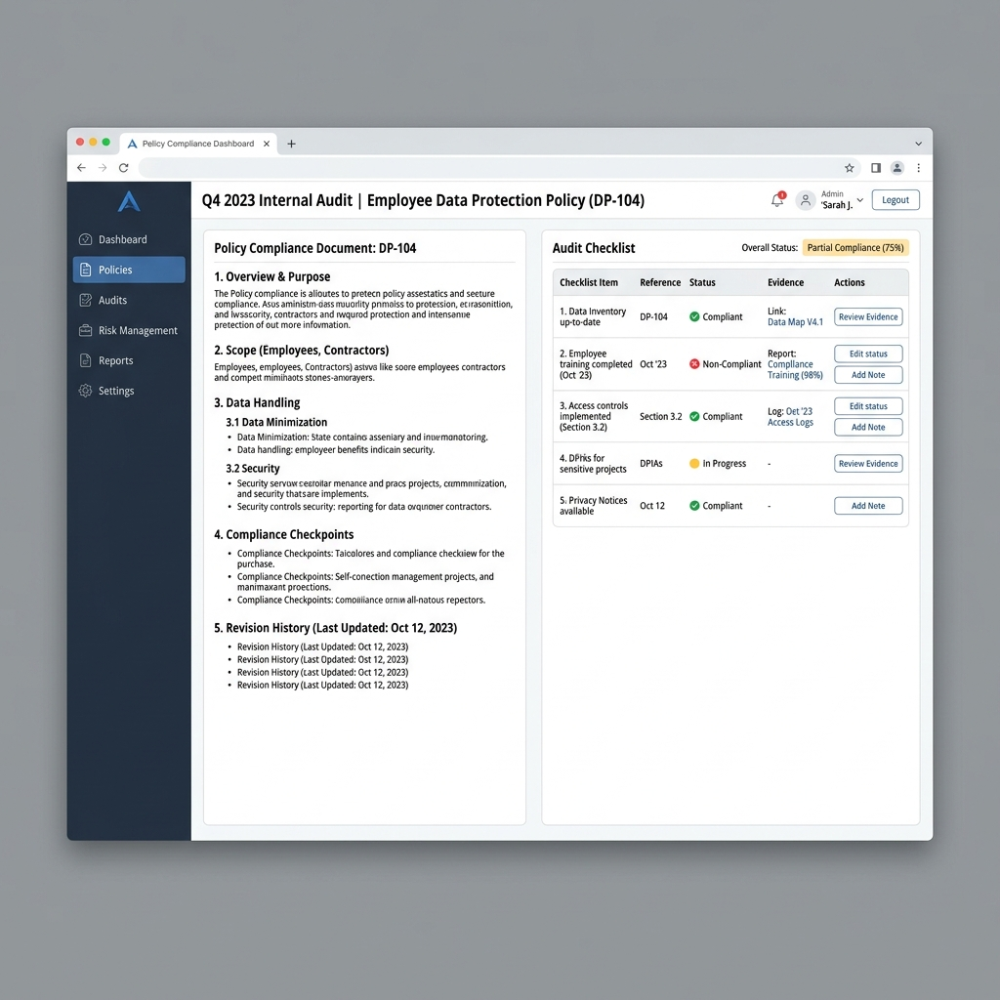

African Algorithmic Accountability Toolkit (AAAT)
An open-source governance resource for robust AI safety, explainability, and recourse in African environments.
The Crisis of Silence in AI Safety
Explainability and interpretability are core pillars of AI safety — and among its most neglected. The global conversation on responsible AI has concentrated heavily on fairness and bias, rightfully so. But the absence of explainability and the absence of interpretability carry their own category of harm, and they are not the same problem.
Interpretability asks: can a human understand why a model behaves as it does?
Explainability asks: can the person affected by a decision understand why that decision was made about them?
When a loan is denied, a visa is rejected, or a defendant is flagged as high-risk by an algorithm, the harm is not only in the outcome — it is in the silence that follows. No explanation. No path to appeal. No way to know what would have to change. This silence is a governance failure, and in African contexts, where recourse infrastructure is thin and affected communities often lack legal representation, it is a compounding injustice.

The AAAT Proposal
I propose the African Algorithmic Accountability Toolkit (AAAT) — an open-source governance resource addressing this gap directly. Drawing on my DecisionLens work, the ECOWAS data protection framework, and the AU's emerging AI strategy, the toolkit will deliver three critical components:
Audit Protocol
A fairness and explainability audit protocol adapted specifically to African demographic contexts and data environments, moving away from purely Western auditing assumptions.
Plain-Language Recourse
A mandatory standard requiring that any AI decision affecting an individual be accompanied by a comprehensible explanation and a clear, actionable path to appeal.
Intercultural Inventory
An intercultural values inventory mapping how West African communities conceptualize fairness, dignity, and accountability to localize governance frameworks correctly.
The Governance Layer
My broader body of work reinforces this fundamental agenda: Kasa AI demonstrates that AI can be made accessible to communities excluded by language and poor digital infrastructure; Articulate AI demonstrates that the tools for self-advocacy and communication can be democratized. The AAAT is the governance layer that ties these together — ensuring that where AI reaches communities that have been overlooked, it does so on terms they can understand, contest, and hold accountable.